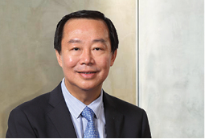
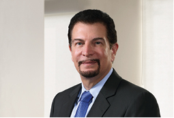
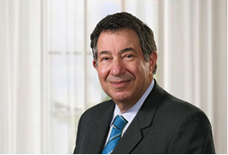
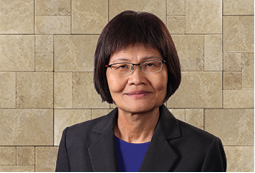
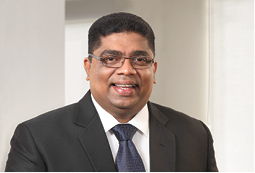
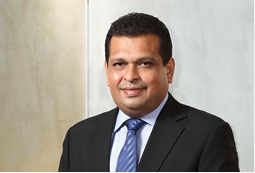
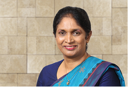
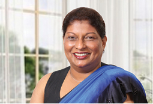
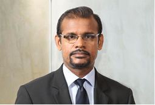

Chairman
Mr. Kumarasinghe Sirisena was appointed to the Board of Directors on the 23 January 2015 as an independent non-executive Director and was appointed Chairman of the Board. He is also a Director/Chairman Mobitel (Private) Limited, SLT Publications (Private) Limited, SLT VisionCom (Private) Limited, SLT Human Capital Solutions (Private) Limited, Sky Network (Private) Limited, SLT Property Management (Private) Limited, Sri Lanka Telecom (Services) Limited and SLT Campus (Private) Limited.
Mr. Kumarasinghe Sirisena holds a Bachelor of Science (Hons.) degree in Public Administration and Management from the University of Sri Jayawardenepura and a Master of Business Administration from Wayamba University of Sri Lanka and a Master of Public Management degree from Sri Lanka Institute of Development Administration. He also holds Postgraduate Diplomas in Accountancy & Financial Management and Project Management from the University of Sri Jayawardenepura.
He is fellow member of the Association of Public Finance Accountants of Sri Lanka, which is the public sector wing of CA Sri Lanka.
He has more than 19 years of experience in general management, financial management and human resource management areas in engineering, construction, project management and finance in private and government sectors.
In his executive career he was the Managing Director of State Development & Construction Corporation, State Timber Corporation and the CEO/General Manager of the State Timber Corporation. He has also served as a Board Director of Mahaweli Engineering Services Ltd.
He currently serves as Director on the Boards of Land Reclamation & Development Company Ltd. and L. R. D. C. Services (Pvt) Ltd. and as Financial Consultant at Araliya Group of Companies.

Director
Mr. Chan Chee Beng, a Malaysian, was appointed to the Board of Directors on the 5 June 2008 and subsequently to the Board of Mobitel (Private) Limited. He also serves as a member of the audit committee.
He has more than 30 years of experience in investment banking, financial management and accounting including stints with Ernst & Young and Morgan Grenfell & Co. Ltd. prior to joining the Usaha Tegas Sdn. Bhd. (‘UTSB’) Group in 1992 as head of corporate finance. He is presently an executive Director of UTSB and serves on the Boards of several other companies in which UTSB has significant interests such as Maxis Communications Berhad and Binariang GSM Sdn. Bhd., having an operational base in Malaysia, Bumi Armada Berhad (‘BAB’) (listed on Bursa Malaysia Securities Berhad), an off-shore oil and gas service provider in which he is also the Acting Chief Executive.
He is also a Director of Yu Cai Foundation and MEASAT Satellite Systems Sdn. Bhd. (‘MSS’), a regional satellite operator, and a Director in a non-executive capacity on the Board of MEASAT Global Berhad (‘MGB’), the holding Company of MSS. He is a member of the audit and nomination committees of BAB and Maxis and a member of the audit committee of MGB.
Mr. Chan holds a degree in Economics and Accounting from the University of Newcastle-upon-Tyne, United Kingdom and is a Fellow of the Institute of Chartered Accountants in England and Wales.

Director
Mr. Jeffrey Jay Blatt was appointed to the Board of Sri Lanka Telecom PLC on 5 June 2008 as an independent non-executive Director, and is currently the Chairman of the Senior Tender Board, the risk management committee, as well as the remuneration and nomination committee and is a member of the technology sub-committee. He is also a Director of SLT VisionCom (Private) Limited. Mr. Blatt acts as Special Counsel to Astro All Asia Networks PLC and Astro Malaysia Holdings Berhard (‘Astro’), as well as to Usaha Tegas Sdn. Bhd. (‘UT Group’) in Malaysia and is of Counsel at the law firm of Tilleke & Gibbins in Thailand leading its Telecom, Media and Communications (‘TMT’) practice. From 2011 through 2015, Mr. Blatt was named as one of Asia’s leading TMT lawyers by the Legal 500 Asia Pacific and by Chambers Asia Pacific and is also listed in, The International Who’s Who of Business Lawyers, as one of the world’s leading practitioners in Telecoms & Media (2014, 2015). His clients at Tilleke & Gibbins include a variety of high profile international clients in the telecom, broadcasting and media space, such as Microsoft, Apple Computer, AT&T, 20th Century Fox, Facebook, LINE, Broadcom and WorkPoint Entertainment.
Prior to his current positions, he was the senior vice-president of Business Affairs and General Counsel at Astro and the Group General Counsel of the UT Group in Malaysia. Before moving to Malaysia, he was a partner in the nationally recognised law firms of Irell & Manella LLP and Blakely, Sokoloff, Taylor and Zafman in Los Angeles, California and represented technology companies including Apple Computer, Sun Microsystems, Intel, Broadcom and Sony Electronics. He also represented entertainment companies in multimedia and special effects matters including Sony Pictures Entertainment and Light Storm Entertainment.
Mr. Blatt attended the Lewis and Clark Law School, Oregon, USA and holds a Juris Doctor (J.D.) degree, cum laude, as well a Bachelor of Science (B.S.) degree in Engineering from the University of California, Los Angeles (UCLA) and a Master of Science (M.S.) degree with Distinction from Tiffin University, Ohio. He is a member of the California and United States Federal Bars and is a registered United States Patent Attorney.

Director
Mr. Lawrence Paratz was appointed to the Board of Sri Lanka Telecom PLC as an independent non-executive Director with effect from 26 May 2010 and subsequently to the Board of Mobitel (Private) Limited.
Mr. Lawrence Paratz holds a MSc (Telecommunication Systems) with distinction and was awarded the Philips prize from Essex University and a M. Eng. Sc. from the University of Queensland.
He is a Fellow of Engineers Australia (FIEAust) and an alumnus of the Stanford University Executive Development Programme. He also holds Bachelor’s Degrees in Science and Engineering (Honours).
In 2011, he was elected as a Fellow of the Australian Academy of Technological Sciences and Engineering (ATSE).
Mr. Paratz has more than 30 years experience in all facets of telecommunication industries including mobile, fixed, broadband, satellite and international networks, both domestic and international. This includes capital and infrastructure development, operations, sales, customer service and regulatory issues. As a Director and Chief Executive of Acacia Australia Pty Limited, he was responsible for development of an integrated proposal for delivery of national broadband communication for Australia.
He has served as a Director of Maxis Communication Berhad, Chairman of the technology committee of the Board and a former senior executive of Telstra Corporation. He is a Director of Mobitel (Private) Limited, Sky Networks (Private) Limited, SLT Property Management (Private) Limited, SLT Campus (Private) Limited and SLT Publications (Private) Limited. He is also a Director of Vernet Pty Ltd., a company providing ultra high speed broadband to universities and research establishments in Australia, Real Thing Entertainment Pty Ltd., an Australian high technology company and Razorback Pty Ltd., a company incorporated in Victoria, Australia.
Mr. Paratz has had executive responsibility for multi-billion dollar programmes and integrations including network transformations and deployments across multiple technologies, with extensive experience in international, metropolitan and regional and rural communications. He previously served as a member of the Board of the Australian Government’s Internet Assistance Programme. He has been an invited speaker at the Australian Health Informatics Conference and the Australian Academy of Technological Sciences and Engineering.
He was formerly Chairman of the On-Trac@Peter Mac Adolescent and Young Adult Cancer Programme and has been involved in a number of initiatives in e-health.

Director
Ms. Lai Choon Foong was appointed to the Board of Sri Lanka Telecom PLC on 9 May 2014 as an independent non-executive Director and is a member of the audit committee and risk management committee.
Ms. Lai holds a Bachelor of Commerce from Melbourne University, Australia and is a Chartered Accountant of the Malaysian Institute of Accountants and a Certified Practicing Accountant of CPA Australia. She has more than 30 years of working experience in finance, procurement and audit areas in telecommunications, finance and banking industries and Government sector. She was with Maxis Berhad, Malaysia’s premier communications service provider for 18 years, with her last role as the Financial Controller.

Director
Mr. Cooray was appointed to the Board of Directors on 3 February 2015 as an independent non-executive Director and sits on the Senior Tender Board. He is also a Director of SLT Publications (Private) Limited, SLT Property Management (Private) Limited and Air Inn Hansa Marine Enterprises (Pvt) Ltd.
Krishantha Cooray is a private sector professional with an academic background in political science and law.
After schooling at S. Thomas’ College, Mount Lavinia, Krishantha read for a Bachelor of Arts (Honours) in political science and law at the University of Middlesex.
As a professional, he has held several executive positions in leading private sector companies, including the Ceylinco Group, Arpico Group and the Maharaja Organisation.
He joined the Arpico Group as the Head of Business Development and went on to found the first completely independent publishing house owned by a public-quoted company. He was instrumental in setting up Rivira Media Corporation (Pvt) Limited under the Arpico Group and served there as founding Director and Chief Executive Officer.
The two mainstream newspapers launched by him, ‘Rivira’ and ‘The Nation’, continue to be widely read national newspapers in Sri Lanka. During his stint at the Maharaja Group, Krishantha worked closely with electronic media functioning as a Consultant on all news-related matters pertaining to the TV and Radio stations of the Company.
His long-standing association with the media includes the contribution of articles to several national newspapers.

Director
Mr. Farook was appointed to the Board of Directors on 3 February 2015 as an independent non-executive Director and he sits on the Senior Tender Board and the technology sub-committee. He is also a Director of SLT VisionCom (Private) Limited and SLT Property Management (Private) Limited.
Mr. Farook is an entrepreneur and investor with over 20 years of rich experience in diversified fields of business including telecommunications, green energy, property development, venture capital and investment promotion. He is an old boy of Royal College, Colombo.
Mr. Farook currently serves on the Boards of several Sri Lankan, Malaysian and Hong Kong-based companies including PowerHub International (Malaysia), PowerHub Green Energy (Private) Limited, Omega Group (Private) Limited, Lakeside Property Developers (Private) Limited, Manelwala Hydropower (Subsidiary of Pan Asia Power Limited). He has extensive expertise in the field of alternative energy project development and has been an investor in a number of mini hydropower and renewable energy development companies in Sri Lanka. He was one of the founding investors and Director of Pan Asia Power PLC which is currently listed in the Colombo Stock Exchange. As an international venture capitalist and investment promoter, Mr. Farook has many business interests in Malaysia and Hong Kong.

Director
Ms. Ekanayake was appointed to the Board of Directors on 3 February 2015 as a non-executive Director and sits on the audit committee and risk management committee. She is also a Director of SLT Property Management (Private) Limited and SLT Campus (Private) Limited.
Ms. Ekanayake is a Member of the Sri Lanka Administrative Services and joined the service in 1984. She was appointed to as a Deputy Secretary to the Treasury on 9 March 2015. Prior to this appointment, she had held senior positions in the Treasury as Director of Economic Affairs, Controller of Insurance, Additional Director General, Department of External Resources and Director General, Department of Trade, Tariff & Investment Policy and the Director General, Department of National Budget.
Ms. Ekanayake holds a Science Special degree from the University of Kelaniya, an MBA from the Postgraduate Institute of Management, Sri Lanka and postgraduate Diploma in the fields of Development Planning Techniques (ISS,The Hague), International Relations (BCIS Colombo) and Economic Development (University of Colombo). She represented the Treasury in the council of the Asian Reinsurance Corporation from 2002 to 2013 and functioned as it Vice Chairperson during the period from 2008 to 2013. She also represented the Treasury on the Board of the NDB Bank until March 2015. As at now, she represents the Treasury on the Board of People’s Bank and the Board of Management of the Superior Court Complex.

Director
Ms. Pieris was appointed to the Board of Directors on 3 February 2015 as an independent non-executive Director and sits on the audit committee, risk management committee and the Senior Tender Board. She is also a Director of SLT Human Capital Solutions (Private) Limited and SLT Property Management (Private) Limited.
Ms. Pieris is an Attorney-at-Law of the Supreme Court of Sri Lanka and counts 27 years of experience including 27 years of practice at the Bar and currently serves as the partner of Paul Ratnayeke Associates an International Legal Consultants, Attorneys-at-Law, Solicitors and Notaries Public.
Earlier she held the position of the Assistant Secretary of the Bar Association and numerous positions at the Bar Association.

Company Secretary
Mr. Mahesh Athukorale joined Sri Lanka Telecom PLC in 2003 as the Assistant Company Secretary. In his career spanning over 18 years he has 11 years of experience in the SLT Group and 7 years in the financial sector. He was appointed as the Company Secretary of the SLT with effect from 21 November 2014 in place of Messrs P. W. Corporate Secretarial (Private) Limited.
Mr. Mahesh Athukorale holds a Master’s Degree of Business Administration from the University of Colombo and a Bachelor’s Degree of Law from the Open University of Sri Lanka. He is an Attorney-at-Law and a member of the Institute of Chartered Secretaries and Administrators of UK.
The Board and Management of SLT are committed to continuously enhance the standards of corporate governance principles and processes so as to improve performance, accountability and transparency of the Company.
The Board and Management of SLT are committed to continuously enhance the standards of corporate governance principles and processes so as to improve performance, accountability and transparency of the Company.